設定
account_circle
アカウントマネージャー
sort
カラム並べ替え
カラム並べ替え
sort
並べ替え設定
desktop_windows
環境設定
テーマの設定
白
黒
新規通知のポップアップお知らせの表示秒数
0に設定すると表示されません
秒
設定
マルチカラムの最低横幅
画面全体の横幅÷コラム数がこの値を超えた時、横スクロールとなります。
px以上
設定
フォントサイズ
15px(絶対指定)
px
設定
reorder
タイムラインの設定
時間表記設定
相対時間の例:"1分前","3日前"
絶対時間の例"23:25:21","2017年12月30日 23:59:00"
混合表示は、当日のトゥートのみ相対、それ以外は絶対で表示
相対時間
絶対時間
両方表示
混合表示
非表示設定の画像を隠す
きつめのぼかしがかかります。
はい
いいえ
非表示設定のテキストを隠す
はい
いいえ
アイコンのアニメーションを再生する
はい
いいえ
指定行数以上を折りたたむ
5文字以下のトゥートは折りたたみません。また、折りたたみ時は改行が描画されません。
行以上または
文字以上
設定
画像の高さ
px
設定
send
投稿設定
デフォルトの警告文
設定
デフォルトの公開設定
公開(Public)
未収載(Unlisted)
非公開(Private)
ダイレクト(Direct)
前回の投稿設定を記憶する
デフォルトでのボックスの挙動(起動時・トゥート後)
隠す
最小化
何もしない
画像投稿設定
画像を投稿し、画像のURLを最後に表示
画像を投稿するがURLは表示しない
現在利用できません。
send
投稿設定
デフォルトの警告文
設定
デフォルトの公開設定
公開(Public)
未収載(Unlisted)
非公開(Private)
ダイレクト(Direct)
前回の投稿設定を記憶する
デフォルトでのボックスの挙動(起動時・トゥート後)
隠す
最小化
何もしない
画像投稿設定
画像を投稿し、画像のURLを最後に表示
画像を投稿するがURLは表示しない
現在利用できません。
bookmark
ミュート・強調の設定
クライアントミュート
クライアント強調
各トゥートのクライアントをクリックすると設定できます。
ワードミュート
Enterで確定
設定
ワード強調
Enterで確定
設定
ユーザー強調
各ユーザーのデータ表示画面で設定できます。
強調色(テーマによって異なります。)
undo
戻る
キーボードショートカット一覧
N:投稿パネルを開く
X:投稿パネルを開閉
Ctrl+Enter:投稿
Esc:投稿パネルを消す
F5:スーパーリロード
E:投稿パネルの幅を切り替え
Shift+C:入力内容を消す
←/→:イメージビューワー起動時に画像切り替え
マウスホイール:イメージビューワー時に拡大縮小
以下Markdownに対応したインスタンスのみ。
Ctrl+B/I/S/U:太字/斜字/取り消し/下線
Shift+Enter:全角スペースを入れて改行
Shift+Space:ゼロ幅スペース
以下アスタルテにログインしている場合のみ
Ctrl+R:
アスタルテ暇人ランキング
を開く
delete
初期化
info
このソフトについて
web
公式HP
trending_up
寄付(Enty)
寿司を投げる
Osushi.love
(スマートフォンから)
GitHub
Developer: Cutls@kirishima.cloud
Copyright © TheDesk on Mastodon 2018 & Cutls.com 2015 All Rights Reserved.
TheDesk LICENSE (Latest Ver.)
Developer: Cutls P(
@Cutls@kirishima.cloud
)